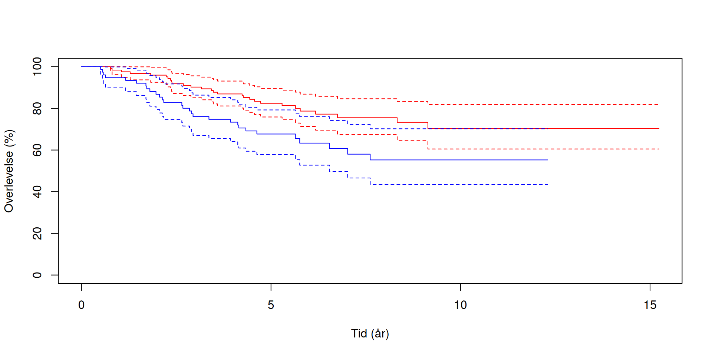
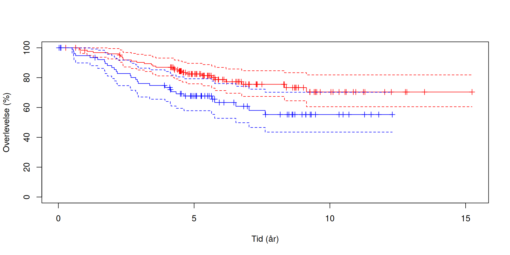

Overlevelsesanalyse
Kaplan–Meier, log-rank og Cox-regression
Vi kalder det overlevelsesanalyse fordi det ofte bruges til at analysere hvornår patienter dør.
Men det fungerer også til at betragte hvornår tilbagefald (recidiv), infektion eller udskrivelse sker.
Og er en helt generel metode der også bruges til at analysere hvornår virksomheder mister kunder.
Helt generelt: Hændelser.
Hvis vi har 100 patienter, så er der på et givet tidspunkt en risiko for at de dør.
Den risiko kalder vi “hazard” - det er en funktion af hvor lang tid der er gået, så vi kan skrive det som en funktion: \[h(t)\] Det er raten af hændelser på tidspunktet t, blandt de patienter der ikke har oplevet hændelsen (død).
Vi kan også beskrive det som en overlevelsesfunktion \[S(t)\]. Det er sandsynligheden for at være hændelsesfri (i live) til tiden t:
Sammenhængen mellem de to \[h(t) = -\frac{S'(t)}{S(t)}\]
\(S*(t)\) er overvelsen diffenrentieret - eller hvor hurtigt overlevelseskurven falder.
Derfor kan vi også beregne \(S(t)\) ved: \[ S(t) = \exp\left(-\int_0^t h(u)\,du\right) \]
Det behøver vi ikke bekymre os om, men det betyder at hvis \(h(t)\) er uafhængig af tiden - at sandsynligheden for at opleve hændelsen ikke ændrer sig over tid, kan vi beregne sandsynligheden for at overleve (være hændelsesfri) efter eksempel 5 år. Hvis harzard er konstant 0.1 pr år, bliver regnestykket:
\[S(5) = e^{-0.1 \cdot 5} = 0.607\] Eller 60.7%
Når vi skal sammenligne forskellige patienter, skal vi måle tiden indtil hændelsen (eller hvor lang tid der er gået uden hændelse) på en ensartet måde.
Vi definerer derfor et starttidspunkt. Det skal defineres på samme måde for alle patienter, og det skal - i denne kontekst - være klinisk relevant.
Selve datoen for starttidspunktet kan godt være forskelligt. De bliver ikke alle opereret, eller skrevet på venteliste, samme dag.
Vi kalder det \(t = 0\), eller \(t_0\), og det kan være dato for diagnose, operationen, indskrivelse på venteliste eller start på behandling.
Hvis vi kun tæller hvor mange patienter der er døde på et bestemt tidspunkt, bliver vi klogere. Men vi bliver endnu klogere hvis vi har information om de der ikke har haft hændelsen endnu.
Så dem inddrager vi også.
Hvad kan der gå galt når vi gør det?
Vi kan opleve at vi taber kontakten til patienterne, og ikke ved hvad deres status er efter sidste kontakt. Det kan være at patienten dør af noget andet end det vi undersøger. Hvis vi studerer infektioner, kan det være at patienten testede negativ efter tre uger, men positiv efter 5. Vi ved ikke hvornår infektionen faktisk skete. Det kan også være at patienten testede positiv allerede da vi startede studiet. Så ved vi heller ikke hvornår det skete. Det kan også være at patienten er i live (eller er hændelsesfri) når vi afslutter studiet. Så ved vi heller ikke hvornår hændelsen indtræffer (eller om den overhovedet gør) Vi kan også foretage studiet over mange år. Behandlingsformer og dermed prognoser kan derfor ændre sig, og nogen patienter bidrager derfor med en anden hazard end andre.
Det kalder vi forskellige ting:
Højrecensurering: Kontakten ophører mens patienten er hændelsesfri. Venstrecensurering: Positiv allrede ved første observation Intervalcensurering: Negativ test efter tre uger, positiv efter 5 Konkurrerende hændelse: Patienten dør af anden årsag end det vi undersøger. Det vil vi behandle som en højrecensurering. Administrativ højrecensurering: Patienten er hændelsesfri ved studiets afslutning Informativ administrativ censurering: Behandling/prognose ændres sig over tid.
Hvis patienterne har fælles slutdato, får de sidst inkluderede patienter kortere opfølgning. Og hvis de samtidig har en bedre prognose, kommer længden af opfølgning til at hænge smmen med overlevelsen. Og så er den administrative censur ikke kun censur, men giver også information.
Vi starter med at patienterne er i live. Efter et stykke tid er der en der dør. Det er der igen lidt senere.
Det vil vi gerne kunne beskrive og analysere.
Hvis vi løfter os helt op i helikopteren, så findes der en overlevelsesfunktion: |>
\[S(t) = P(T > t)\]
T er tiden fra start tidspunktet til hændelsen. Hændelsen indtræffer ved tiden t. Så S(t) er sandsynligheden for at hændelsen ikke er indtruffet ved tiden t.
At patienten stadig er i live.
Det er jo rimelig lige til, så længe vi ikke bekymrer os om hvordan funktionen egentlig ser ud.
Men hvis der var 100 patienter, og 30 af dem er døde efter et år, så er overlevelsen \[\widehat{S}(1) = \frac{100 - 30}{100} = 0.70\] Og eftersom det er en propotion, ved vi også hvordan vi beregnet et 95% konfidensinterval på det estimat.
Det er overlevelsesfunktionen. Sandsynligheden for at være i live, eller mere generelt, event-fri på et bestemt tidspunkt.
Det andet centrale begreb er “hazard” h(t). Hvad er “raten”, risikoen, for hændelsen, død, til tiden t, for de der stadig er “under risiko”. De der er tilbage i studiet til tiden t.
Det tredie centrale begreb er “risikosæt”. Det er de personer der på et givet tidspunkt stadig følges - og ikke har haft hændelse (teknisk set lige før tidspunktet)
Vi ser på det dansk datasæt om død af malignt melanom, efter operation.
Det kan vi plotte - og her plotter vi de to køn med forskellig farve:
Dette er Kaplan–Meier-kurver. Den røde er for kvinder, den blå er for mænd. De stiplede linier angiver 95% KI omkring kurven.
Hvad kan/skal vi se ud af det?
Det er Kaplan-Meier-estimater for melanomspecifik overlevelse efter operation. Den røde kurve viser kvinder, den blå mænd. Begge kurver starter ved 100% og falder trinvist ved observerede dødsfald af melanom.
Kvindernes kurve ligger højere gennem det meste af opfølgningen. Vi kan aflæse den estimerede melanomspecifikke overlevelse efter 5 år, til ca. 80% for kvinder, og ca. 70% for mænd, en forskel på ca. 15 %-point.
Kan vi sige noget om medianoverlevelsen? Nej, begge kurer holder sig over 50%. De stiplede linier viser 95% KI. Efter 5 år er intervallerne ca. 75-90% for kvinder, og 60-80% for mænd.
Hvorfor bliver konfidensintervallerne bredere? Der er færre patienter i grupperne - så usikkerheden bliver større.
Hvad er vigtigt her?
Det vi modellerer er tid indtil hændelse. Det kan være mange ting. Død, tilbagefald, infektion eller udskrivelse.
Vi kan også bruge den mere generelt til at modellere fastholdelse af kunder, driftsikkerhed af dimser i industrien eller analyse af arbejdsløshed. Vi holder os til patienter.
Men det er tid til hændelse. Det betyder at derer forskel på om vi har fulgt patienten i 1 år eller 10 år.
Derfor definerer vi et starttidspunkt, der skal være klinisk relevant, og det samme for alle patienter. Det kan være inklusion på venteliste, eller operation for melanoma. Datoerne kan godt være forskellige!
Det event vi observerer er i melanoma eksemplet død.
Vi kan miste patienter på flere måder.
Det kan være at vi mister kontakten til patienten. Han ønsker ikke at deltage i studiet længere, eller fraflytter landet. Vi kan også være heldige at de stadig er i live når studiet slutter.
For disse patienter ved vi at de var i live ved sidste opfølgning. Vi ved ikke hvornår hændelsen indtræffer - for der er meget få dokumenterede eksempler på patienter der slet ikke dør. Vi ved ikke hvornår.
Det kalder vi for højrecensurering.
Højrecensurering antyder at venstrecensurering eksisterer.
Det er ikke så relevant her, vi inkluderer ikke patienter der allerede er døde. Men studerede vi smitte, kunne vi opleve at patienten tester positiv på dag 7. Vi ved ikke om smitten skete på dag 7. Eller på dag 6. Det vi ved med sikkerhed er, at smitten skete senest på dag 7. T<= 7
En tredie type censurering eksisterer:
Intervalcensurering. I andre lande hvor man ikke er registreret i caput et nates, kunne det være at vi havde besøgt patienten på dag 3. Der var hun i live. Vi besøger patienten igen på dag 7. Der er hun død. Ingen ved hvornår døden indtraf. Det er med andre ord sket mellem dag 3 og dag 7. Men vi ved ikke hvornår. 3 < T <= 7
Vi skal altid vurdere censureringen. Højrecensurering i form af at studiet er afsluttet er ofte en rimelig grund til censurering.
Men hvis de mest syge forsvinder fra opfølgning - kan vi overvurdere overlevelsen. Hvis de mest raske forsvinder - for “nu er jeg rask (nok), så er der ingen grund til at gå til lægen” kan vi undervurdere overlevelsen. Hvis diagnosekriterier ændrer sig (administrativ censurering) kan der også opstå problemer.
Hvor kan det gå galt?
I slides gives et eksempel. Hvis vi undersøger effekten af to behandlinger, og den ene er vildt god og betyder at mange patienter er i live når vi slutter studiet - så er der også mange censurerede. De har også haft en chance for at falde ud undervejs, som de ikke ville have haft hvis de var døde. I den anden behandling dør de tidligt. Så censureres de ikke.
Hvis vores data er formatteret korrekt, håndterer kaplan-meier det korrekt.
Vi antager at der ikke er information i censureringen. Eller - det at en patient ikke er blevet censureret (og stadig er i risikosættet) - må ikke forudsige resultatet.
Hvis patienterne indgår i studiet over en længere periode - og prognosen bedres (eg ved bedre behandling over tid), kan denne administrative censurering også være et problem. Det kan kræve at vi justerer efter “periode”.
Immortal time bias. Hvis vi starter studiet ▶ Eksponering defineres som at have modtaget transplantation, ▶ Skal derfor (nødvendigvis) overleve frem til transplantationstidspunkt for at komme i den gruppe. Hvis denne tid fejlagtigt tælles med som eksponeret tid, får behandlingen en kunstig fordel (“immortal”).
Tid til død med hudkræft som eksponering. ▶ Tid til død med total dosis af en given medicin (over tid) som eksponering. De der dør tidligt kan aldrig opnå høj dosis. ▶ Tid til død, hvor eksponering er “at blive pave”. Paver bliver gamle!
Competing risk - I vores melanom data indgår eksempelvis både død af melanom og død af anden årsag. Der er noget andet der udløser hændelsen.
I vil blive bedt om at forholde jer til censureringen.
Den kan også illustreres visuelt:

Hver lodret streg på kurverne markerer censurering. Og husk - hver gang der censureres en patient, bliver risikosættet mindre.
Kurverne ser forskellige ud. Er de nu også det?
null hypotesen er som sædvanlig at der ingen forskel er.
Call:
survdiff(formula = Surv(time, status == 1) ~ factor(sex), data = MASS::Melanoma)
N Observed Expected (O-E)^2/E (O-E)^2/V
factor(sex)=0 126 28 37.1 2.25 6.47
factor(sex)=1 79 29 19.9 4.21 6.47
Chisq= 6.5 on 1 degrees of freedom, p= 0.01 Den giver evidens for at der er forskel i melanomspecifik overlevelse mellem mænd og kvinder.
Bemærk chisq værdien. Der er en dybere forbindelse til netop chi^2 her - men vi kan tænke på det som en kumuleret værdi. De forventede hændelser til hvert tidspunkt, givet fordelen af de to køn i risikosættet beregnes, og summeres.
O er de samlede dødsfald. E er det vi forventer. E er også det forvendtede antal dødsfald. Det er bidrag til chi^2 værdien som i den test. V er så variansen.
Da p-værdien er under 0.05 - forkaster vi null-hypotesen
hazard ratio - men først efter vi har lavet cox-regression
Hvad skal vi kunne med den? Vi skal kunne aflæse overlevelsen på et bestemt tidspunkt. Hvad er sandsynligheden for at overleve til 5 år? Hvis kurven når 50% kan vi aflæse tidspunktet for medianoverlevelsen. Hvis kurven ikke når til 50% - kan vi ikke estimere medianen. Trinene viser hændelser. Censureringsmarkeringer! Der hvor observationer ophører, uden en registreret hændelse. Læse/forstå fænomenet “number at risk”. Deraf følger, at kurvens sidste del kan bygge på meget få patienter. Det betyder også at usikkerheden derude er ret stor. Læse konfidensintervallerne. Sammenligne to grupper. Hvilken har højest estimeret overlevelse. Hvornår og hvordan adskiller de sig. Men den visuelle sammenligning skal vi efterfølgende regne på.
så hvad er det kurven viser os. Det viser os estimatet af overlevelsesfunktionen:
Hvad skal vi kunne sige ud fra den kurve?
Når en patient dør, registrerer vi hændelsen og tiden fra operationen til dødsfaldet.
Men vi observerer ikke dødstidspunktet for alle patienter. Nogle er stadig i live, når studiet slutter. Vi kan også miste kontakten til en patient undervejs.
For disse patienter ved vi, at de har overlevet frem til sidste opfølgning. Vi kender bare ikke deres dødstidspunkt.
Det kalder vi højrecensurering.
Patienterne bidrager med information frem til det tidspunkt, hvor deres opfølgning slutter.
Overlevelsesanalyse.
Vi har et antal patienter som vi følger fra et eller andet tidspunkt, til der indtræder en hændelse.
Metoden bruges generelt,
Call:
coxph(formula = Surv(time, status == 1) ~ factor(sex) + thickness,
data = MASS::Melanoma)
n= 205, number of events= 57
coef exp(coef) se(coef) z Pr(>|z|)
factor(sex)1 0.57411 1.77556 0.26526 2.164 0.0304 *
thickness 0.15910 1.17245 0.03268 4.869 1.12e-06 ***
---
Signif. codes: 0 '***' 0.001 '**' 0.01 '*' 0.05 '.' 0.1 ' ' 1
exp(coef) exp(-coef) lower .95 upper .95
factor(sex)1 1.776 0.5632 1.056 2.986
thickness 1.172 0.8529 1.100 1.250
Concordance= 0.719 (se = 0.035 )
Likelihood ratio test= 23.82 on 2 df, p=7e-06
Wald test = 28.77 on 2 df, p=6e-07
Score (logrank) test = 32.2 on 2 df, p=1e-07